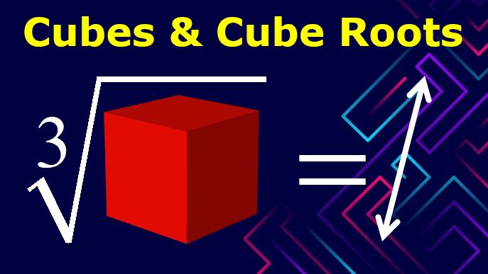
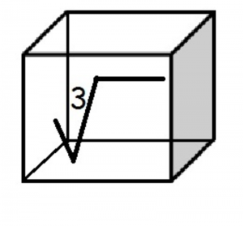

What are Cube Roots?How to Find the Cube Root of a Number?
Say we have a number y.Let us suppose that the cube root of y is given by x.Then we can say that all cube roots x have to satisfy the equation given by y
3 = x.All the non-zero real numbers have a pair of complex conjugate
cube roots
and exactly one real root.All non-zero complex numbers have exactly three distinct complex cube roots.
To get a better understanding of cube roots, let us look at an example.Suppose we have a cube, and the volume is given as 27 cm
3 .
If we want to find the length of the side of that cube, we will have to find the cube root of 27, which is 3.(3 * 3 * 3 = 27).Thus, the side length of this cube is 3 cm.In other words, we can say that the cube root of a number y is that number which, when multiplied by itself three times, gives the number y itself.
History of Cube Roots
The Babylonian Mathematicians devised a way to calculate cube roots in around 1800 BCE.Another method for extracting cube roots appears in the Chinese Mathematical text, The Nine Chapters on Mathematical Art, which was compiled around the 2nd Century BCE and commented on by Liu Hui in the 3rd Century CE.In the 1st Century CE, the Greek Mathematician Hero of Alexandria devised a method for calculating cube roots.The Indian Mathematician and Astronomer, Aryabhatta, in 499 CE, gave a method for finding cube roots of numbers consisting of many digits.Thus, many great minds developed this concept to yield the modern cube root.Properties of Cube Roots
1.All even numbers have even cube roots.E.g., the cube root of 8 is 2 that is an even number.
2.All odd numbers have odd cube roots.E.g., the cube root of 27 is 3, which is an odd number.
3.The cube roots of negative integers will always give a negative number.E.g., the cube root of -64 is -4.
Methods to Find Cube Roots
1.Prime Factorization Method
This method works for perfect cubes.According to the prime factorization method, the first step is to break a number down into its prime factors.The next step is to club the three same numbers to get one number and then multiply it.For example, we have a number 216, and we want to find its cube root by this method.
Step 1: Prime factors
216 = 2 * 2 * 2 * 3 * 3 * 3
Step 2: Club same numbers
2 * 3
Step 3: Multiple them to get cube root
Cube root of 216 is 2 * 3 = 6.
However, we cannot use this method if we do not have perfect cubes.
2.Long Division
Just as the long division method is used to find the square roots of numbers, it can also be used to find the cube roots.In this, we have to club three digits from back to front and find a number whose cube is lesser than or equal to the number.We subtract the result from the given number and find the multiplication factor.We continue this process till we find the cube root of that number.
Conclusion
Cube roots can be a complicated topic.The best way to learn it is by approaching a good and reliable platform such as Cuemath.Cuemath is an amazing online educational platform that focuses on concept building and ensures that kids have fun while learning.Start your journey with Cuemath today!
Share on Facebook Tweet Follow us
Posted On: 2021-03-20T00:00:00
Posted By: Sophia William




Content Date: 2021-03-20
Download Date: 2021-07-09
Document ID: L0C04DZKD